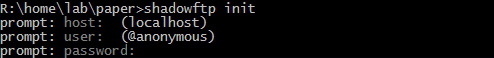

Использование
Для работы в корне рабочей директории (или любой другой) должен находится файл .shadowftprc, содержащий доступы к ftp серверу и пути файлов на локальном компьютере и удаленном. При каждом вызове команды shadowftp в директории содержащий этот файл происходит соединение с удаленным сервером и загрузка туда необходимых файлов, указанных в массиве tasks.
.shadowftprc
{
"tasks": {
"main": [["main.css","www/styles/main.css"]]
},
"host": "127.0.0.1",
"user": "admin",
"password": "ghh43sq32",
"localDir": "C:/develop/",
"remoteDir": "/"
}
Для генерации .shadowftprc можно воспользоваться командой init
shadowftp init

Скрипт задаст вам несколько вопросов, каждый из которых можно пропустить, что бы потом внести правки самостоятельно.
Когда вы выполняете команду shadowftp скрипт начинает загружать на сервер все файлы из списка tasks, однако вы можете загрузить только конкретный таск, указав его имя в качестве первого атрибута:
shadowftp main
 . Версия: 1.4
. Версия: 1.4